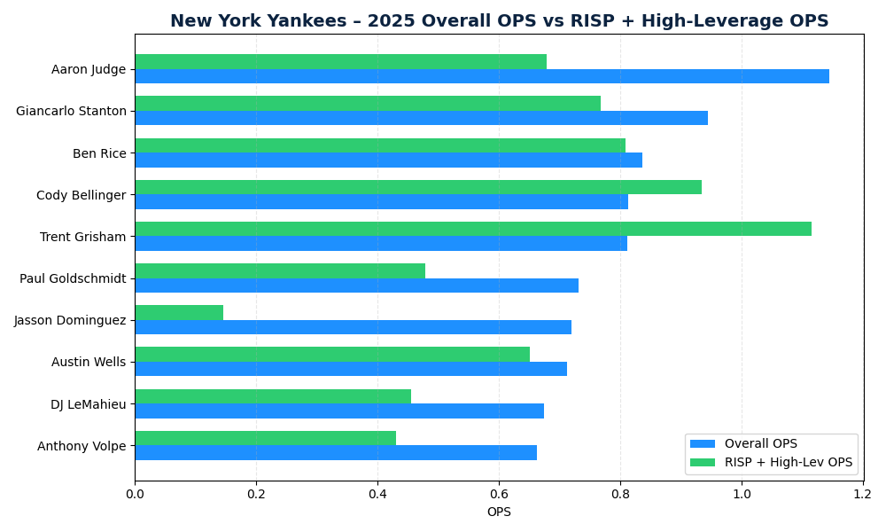
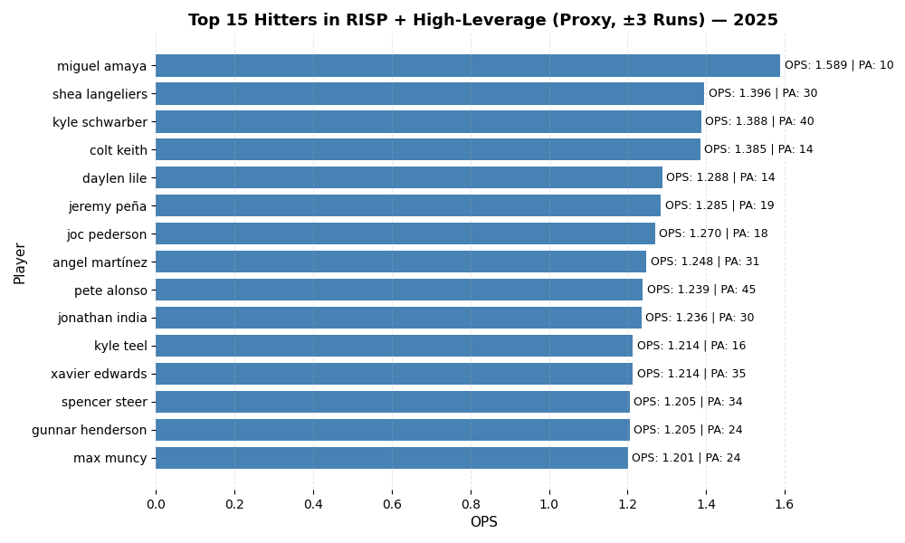

Comparing OPS in runners-in-scoring-position and high-leverage contexts to overall OPS to identify hitters whose performance shifts under pressure.
Scatter plots comparing clutch OPS to overall OPS across qualified hitters.

